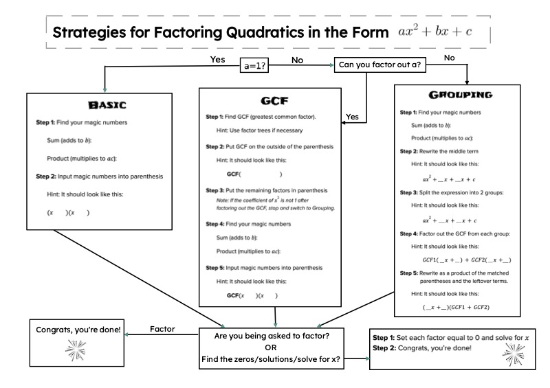

Strategies for Factoring Quadratics
Audio Introduction
Flowchart of Strategies
Instructional Videos
Audio Introduction
Your browser does not support the audio element.
Flowchart of Strategies

Flowchart of Strategies to Factor Quadratics
Instructional Videos
Factoring Quadratics Part 1
Factoring Quadratics Part 2